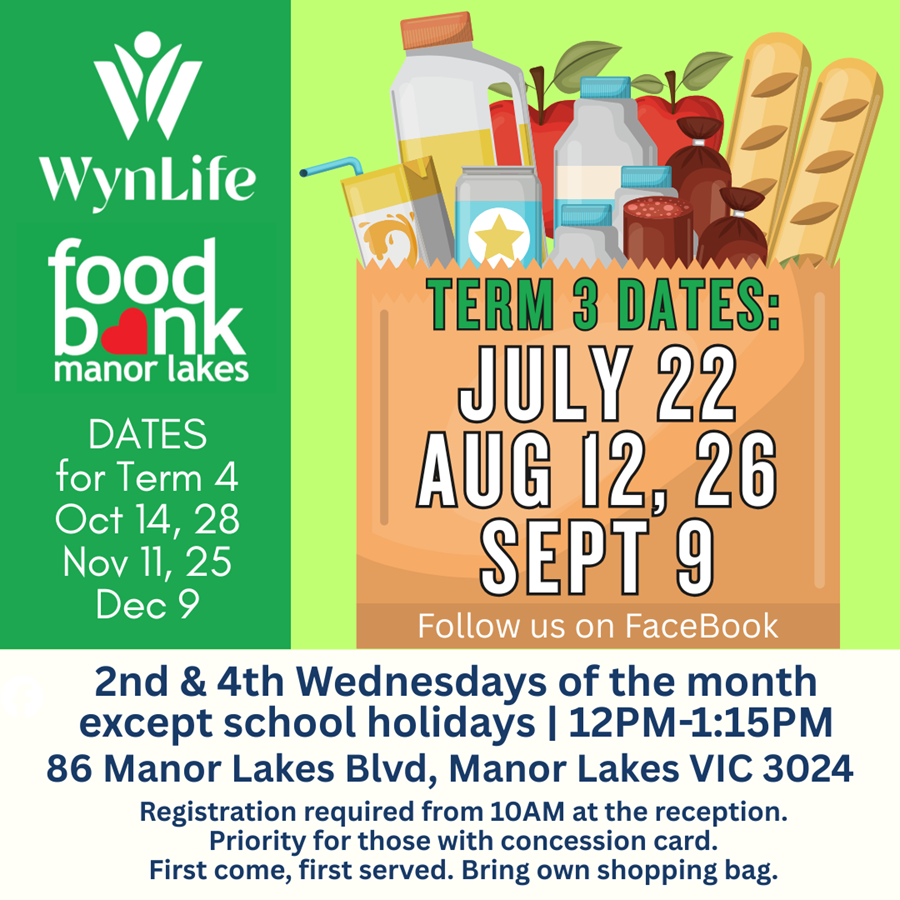
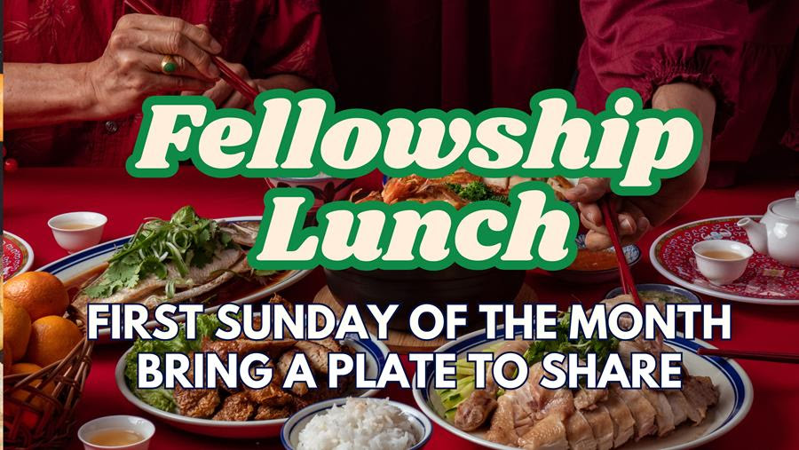
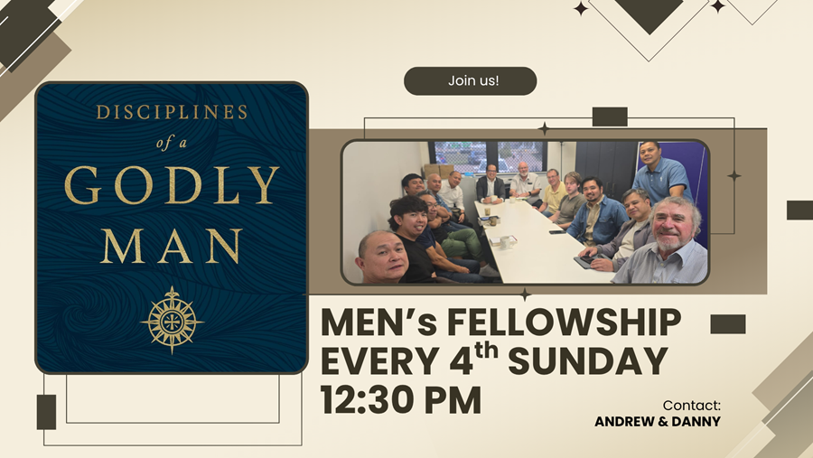
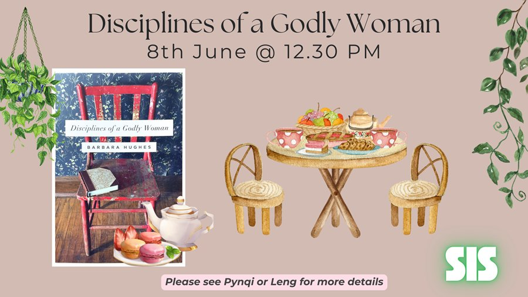

This Week's Bible Reading
Follow along with our weekly reading plan. We're currently working through the Book of Revelation with teaching by J. Vernon McGee — one of the great Bible teachers of the 20th century.
Scan the QR code on the poster or use the link below to access the reading guide and study materials.
Access Study Materials
Food Bank — Manor Lakes
WynLife runs a Food Bank as an expression of God's love and grace in our community. We provide free food relief to those in need in the Manor Lakes area.
Food Bank Details
(except school holidays)
(Registration from 10:00 AM)
Fellowship Lunch
Join us for our monthly Fellowship Lunch — a time to share a meal, build friendships, and enjoy community together after Sunday service. Everyone is welcome and encouraged to bring a plate to share!
Details


Disciplines of a Godly Man
Men — join us for our ongoing book study working through Disciplines of a Godly Man by R. Kent Hughes. This is a practical and challenging study on what it looks like to live as a man after God's own heart.
Sessions are held every first Sunday of the month, following the Fellowship Lunch. All men are welcome — no prior reading required to join.
Details
Disciplines of a Godly Woman
Ladies — join us for our women's book study working through Disciplines of a Godly Woman by Barbara Hughes. A rich and encouraging study for women who want to deepen their walk with God.
Sessions run every second Sunday of the month. Please see Pynqi or Leng for more details on upcoming dates and how to join.
Details

Other Announcements
2026 Entrance Update
Our church entrance has changed for 2026. The old entrance is now closed. Please access via McGrath Road, then turn into Torquay Way and turn right at Rosedale Place to reach the temporary entrance.


Urban Mission Camp 2026
UMC is coming to Melbourne — 6 to 11 April 2026. Dynamic training and practical outreach to inspire, equip, and mobilise young adult Christians from across Australia and New Zealand to share Jesus boldly.
Also features Made For This, a public event in Federation Square showcasing local Christian music artists. Scan the QR code on the poster to register.